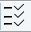
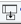
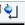

lockdisp
NAME
lockdisp - Open the lock display window.
DESCRIPTION
The command lockdisp opens the lock display window in which the lock signal is shown (see the next figure).
At the top of the lock window the following buttons are available:
Open the User Preferences window [set] (see next figure).
Toggle lock monitor mode.
Lock current sample.
Toggle lock display mode between single and dual color.
Toggle grid: both, vertical, horizontal, off single.
 Detach lock window from main TopSpin window.
 Select TopSpin main window.
Close the lock display window.
The lock signal is the NMR signal of the lock nucleus, typically 2H or 19F.
The lock display can be used in two different ways:
- When the field is unlocked.
- In this case the lock frequency is swept and lock signal shows a pattern of wiggles with a maximum intensity at the resonance frequency. This pattern can be used to set the field value and lock phase. The field value can be adjusted from the BSMS display (bsmsdisp) until the maximum lock signal lies at the center of the lock display window. The lock phase can be adjusted until the intensity is about the same on both sides of the center.
- When the field is locked.
- In this case the lock frequency is kept at the resonance position of the lock nucleus and is only adjusted in responds to changes in the magnetic field. The lock signal is a horizontal line in the upper part of the lock display window. Furthermore, the position of this line can be used for shimming the magnet. When the homogeneity of the field improves, the lock signal increases, i.e. the line moves upward.